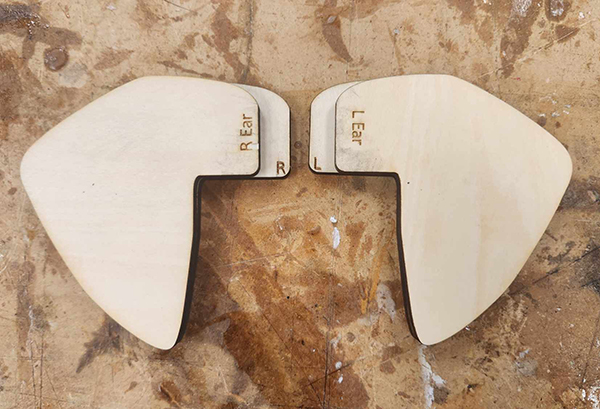

I started by scanning the pieces from the cardboard kit. After a couple failed attempts with the pieces out of the packaging, I had to keep the pieces left in the cardboard base in order to get a clean line to copy.

I traced each piece in Illustrator, making sure to get as accurate of lines as I could get. I also included some of the details to engrave into the wood.

I tested the laser cutting of wood since this was the first time I was going to be cutting wood. Unfortunately, with the setting set to plywood, the "correct" type of wood, the wood basely made a slight cut into the wood. This was an epic fail and I was worried I wouldn't be able to cut my final elephant out of wood.
Luckily the wood cut once I changed to setting to Pine wood.
I cut a test guage to test the fit of the wood pieces.
Next I cut out the pieces for the elephant. The engraving process was a bit slow, but the cuts went quickly. It took about 15 minutes to cut each piece of 12x12" piece of wood which held about 4-5 pieces of the kit elephant.
I started sliding cut pieces onto the center bar. They fit well.

However, even with correct math, the center piece ended up being too long and needed to be recut 1/4" shorter.
I ended up doing my math wrong and miscalculated from the mm = inches. I cut the eye hole 1mm too small. I ended up buying smaller beads for the eyes, however, with the smaller bead, the hole from the previous later was too big and the eye sank into the lower wood pieces and needed to be readjusted.
I created a guage to test the size I needed to recut the lower layer of the wood.
Guage for the eye hole.

The ears ended up boing too short to fit properly in the ear holes.
I had to add an extra 1/2" in length to each ear attachment section to ensure a proper fit.
Fixed ear!

Size comparrison of the original cardboard 2" kit vs the 8" 1/4" wood pieces that I recreated.

All the final cut pieces. 27 pieces in total.

I glued the elephant together in phases to ensure a good fit. I used wood glue and clamps for each phase of the gluing process.